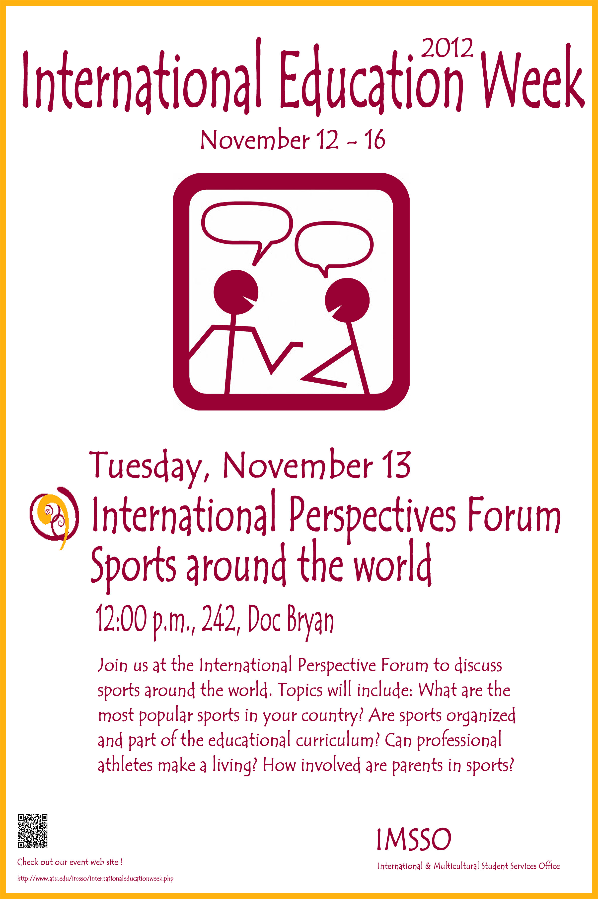
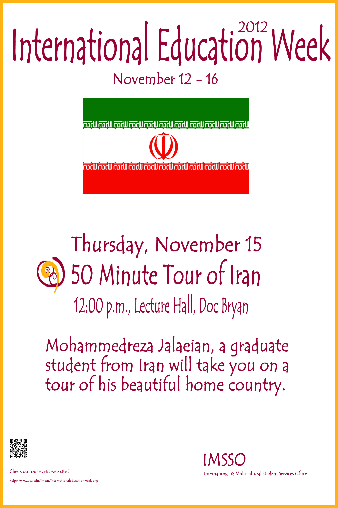

Service Philosophy & Values
My service is grounded in the conviction that academic leadership requires active institutional citizenship, rigorous peer-review stewardship, and meaningful community outreach. I integrate departmental governance, scholarly editorial contributions, and civic volunteerism to advance equity, access, and excellence across academia and society.
1. Institutional & Departmental Governance
Coordinated search committee logistics, candidate evaluation pipelines, interview schedules, and faculty onboarding.
Evaluated and modernized undergraduate and graduate computer science courses and degree program requirements.
Formulated institutional strategies and responsible adoption policies for AI in teaching and research.
Contributed to campus-wide sustainable operations and energy-efficient computational infrastructure initiatives.
Mentored student coding competitions, hackathons, industry networking sessions, and career preparation workshops.
Promoted inclusive student representation and departmental accessibility initiatives.
Spearheaded international student orientation, cross-cultural diplomacy, and community programming; coordinated logistics for major multicultural showcases and civic celebrations.
2. Campus Cultural Leadership & Community Events Gallery
International Education, Multicultural Festivals, Student Leadership & Athletics
During my summer service as an International Student Guide at the International and Multicultural Student Services Office (IMSSO) at Arkansas Tech University, I directed campus-wide cultural leadership initiatives, new international student orientation, cross-cultural diplomacy, and institutional event logistics. This project united domestic and international student cohorts through comprehensive cultural, academic, and athletic celebrations across the university.

3. Institutional Service Visual Artwork & Creative Media Portfolio
Campus Event Posters, Graphic Design, Institutional Branding & Portal UI Architecture
A core dimension of my institutional service portfolio comprises visual arts, graphic design, promotional poster artwork, and digital user-interface design. During my service at Arkansas Tech University, the International & Multicultural Student Services Office (IMSSO), and broader university governance, I designed high-resolution cultural event flyers, photo contest marketing materials, and departmental web system architectures that elevated student engagement and institutional visibility.

"Tour of Iran" Cultural Event Poster
Original graphic design created for a university cultural exhibition night celebrating Persian historical architecture, cultural landmarks, literature, and heritage.
Annual Campus Photo Contest Poster
Promotional poster and visual guidelines for the campus-wide student photography competition, encouraging creative visual documentation of landscape, wildlife, and university life.

Institutional IT & Security Architecture
Architectural schematic for enterprise server governance, institutional access policies, cybersecurity protocols, and computational research laboratory design.
Institutional Branding, Digital Portals & UI Architecture


4. Scholarly Service & Peer Review
Journal Reviewing
- • Nature Quality & Quantity (2025)
- • Journal of Supercomputing (2025)
- • Journal of Nonprofit Management and Leadership (2024)
- • Journal of Natural Language Engineering, Cambridge University Press (2022–2023)
- • Journal of Imaging Science & Technology (JIST) (2016–2018)
Conference Reviewing & Editorial
- • IEEE BIBM (Bioinformatics & Biomedicine, 2022)
- • ACM CIKM (2020)
- • ACM SIGKDD Workshop on Knowledge Graphs (2020)
- • ACM SIGCHI ETRA (2018–2019)
- • Editorial Board: Research in Biomedical Engineering & Technology (2025–Present)
- • Editorial Fellow: The Journal of Information & Culture, Univ. of Texas Press (2019)
5. Thesis, Dissertation & Capstone Advising
6. Community Engagement & Public Service
Volunteer in training advocating for children in the protective care system.
Community volunteer assisting refugee resettlement, cultural integration, and language access.
Volunteer civic engagement on environmental stewardship and community building.
Volunteer community service supporting youth education and community aid in Cairo.